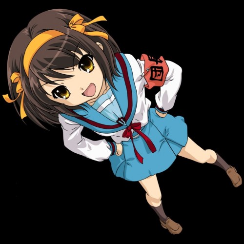

TSD Wiki Character Template 1.2 (https://www.thesupremedirector.xyz). Use or distribution of this template or modified versions of this template without this line of attribution is strictly prohibited.
Full Name: 涼宮ハルヒ (Suzumiya Haruhi. In Japan, the surname comes before the first name.)
Nicknames: Haru-chan, Suzu-chan, "that girl I saw with The Supreme Director"
Age: 17 Era / Year of Origin: 2003
Species: Human
Gender: Female Pronouns: She/Her/Hers Sexuality: Unknown
Voice Sample: -
Battle Theme: -
Personality: Eccentric, energetic, and assertive
Likes: Adventure, supernatural phenomena, making her own rules, having fun
Dislikes: Boredom, mundane activities, conformity
Skills and Talents: Leadership, persuasive communication, creative thinking
Fears: Ordinary and uneventful life
Personal Goals / Motivations: To find and interact with aliens, time travelers, and ESPers; to live a life full of excitement and adventure
Affiliation / Occupation: High school student, allies with The Supreme Director
Titles Held: Founder and leader of the SOS Brigade (Save the World by Overloading it with Fun Haruhi Suzumiya Brigade) (by self)
Special Abilities: Possesses reality-altering powers
Strengths: Charismatic, determined, natural leader
Weaknesses: Impatient, impulsive, semi-oblivious to her ability's consequences
Lore / Associated Backstory: Haruhi Suzumiya is a high school student who possesses the ability to reshape reality. She is the founder and leader of the SOS Brigade, a club she forms to seek out and interact with aliens, time travelers, and espers. Haruhi's strong desire for excitement and the extraordinary attracts these supernatural beings to her. Haruhi was oblivious to her powers, until she encountered The Supreme Director. Now, allied with another reality altering entity she seeks thrilling adventures, though unknowingly actually desiring normal and average experiences with friends.
Inventory:
Eye Color: Brown
Height: 160 cm
Weight: -
Photo:
